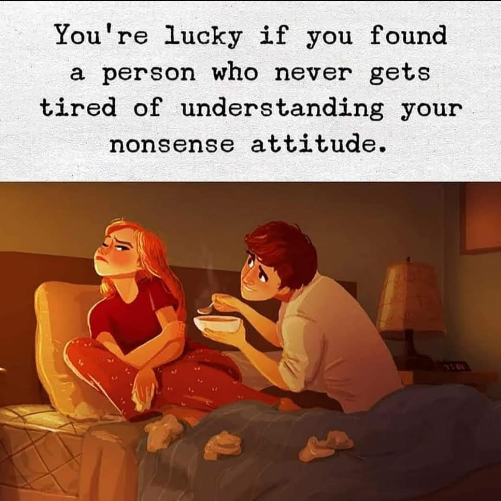

I am really sorry Nivi. I don't hate you. I really really love you. I miss you so much. I was... I guess I still am really upset. I need you. So when you ignore me it feels really sad especially when you talk to other people. But I understand you. I know you can't always be touchy feely with me and I know you can't always be there for me. You are a wreck nivi. But you are my wreck. The wreck I fell in love with. You don't have to always be there for me. I know you try your very best. I really want to just come over to your house right now and give you a long hug and kiss you softly till you feel happy. But it's sad that I can't do that. But it's okay. I know you want to meet me and we will someday. And that will be the best day of our lives. We will both be really happy. I honestly can't wait for that day. But for right now, let's just keep fighting. I am sorry I was angry at you. But I hope you can understand that I was upset and you would forgive me. And I understand that you are not talking to me not because you don't have feelings for me, but because it's hard for you to communicate. I am sorry for being rude. I love you.
But there is one thing... I really really want to text you right now and apologise. But I can't. I need you to text me first. I want you to say you are sorry. I want you to apologise. You don't really have anything to be sorry for. It's not your fault. And I understand you. But... I just want to feel like you do care about me. Because right now I am really scared of losing you. And if I text you now and start a conversation, I will keep feeling like you are talking to me as a courtesy and not because you actually care about me. So yeah.. I need you to text me first. I need you to show me you care about me. I am sorry. I really do love you. Please come back to me Nivi. I miss you. You are my baby. You are my kochu. And I am always yours.